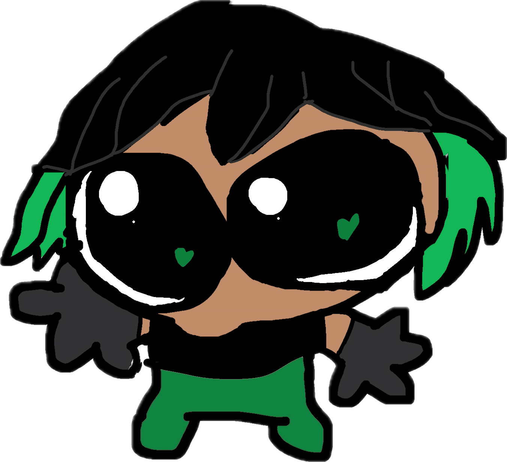
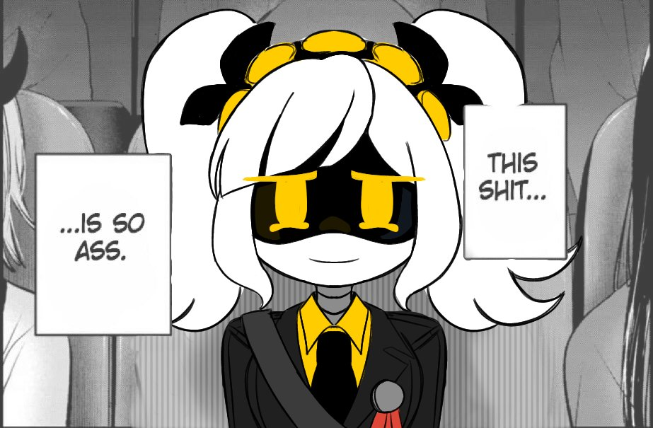
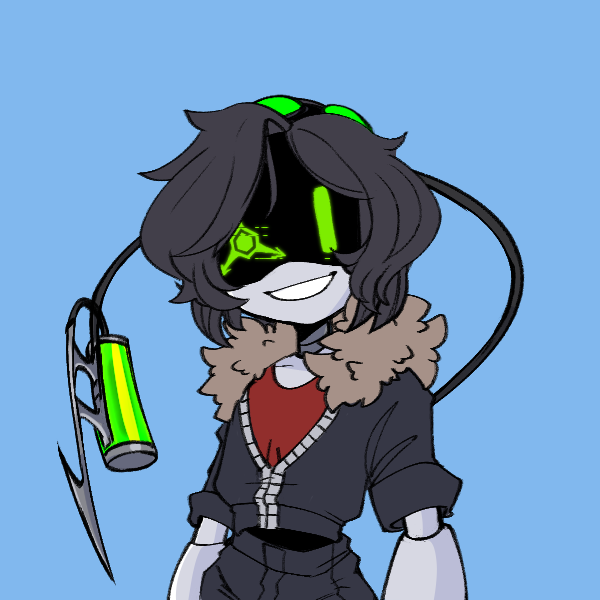
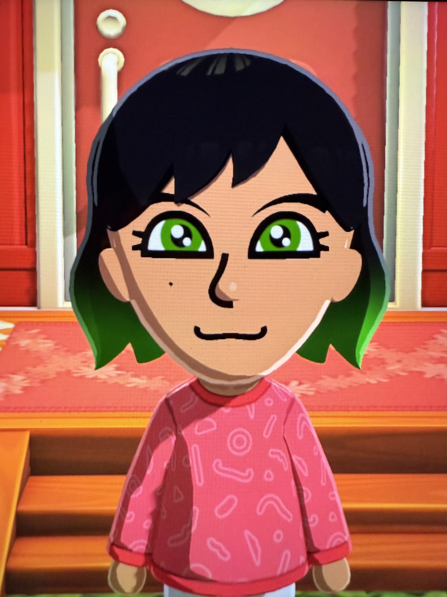

Full Name:
Jade Vispes
Nickname(s):
Yo-Yo Girl, Jades (like Hades), Peru
Place of Birth:
New Yunas, U.S
Date of Birth:
November 28, 2037
Status:
Alive

Age:
19 (At The Start)
Gender:
Female
Star Sign:
Sagittarius
Species/Race:
Latina - Peruvian
Occupation:
Student / Bounty Hunter
Height: 5' 4'' (I'm being generous :3)
Weight: idk lol
Skin Color: Brown
Hair Color: Black
Hair Style: Layered medium cut (a bit vague until I start drawing her properly)
Eye Color: Green (Or just dark brown if it looks weird and distracting)

_________________________________________________________________________________________
School/Daily: Casual (Jeans, Crop Top, Tank Top)
Anything comfortable and affordable because she's broke LOL
She's used to it anyway; coming from a low income family
(Bueno, Bonito y Barato)
The type to go thrifting
Hangs onto years old clothes
Bounty Hunter: Windbreaker with Gym Clothes underneath
She uses a mix of clothes she has + stuff she can get for cheap + things she nabs off her enemies
Ex: Fingerless Leather Gloves she stole off a bounty once, helps with string burn from her yo-yo and it makes her feel cool :3
Accessories: Story Significant Ring, Occasional Earring(s)
Features: Green falloff dye fade on the edges/tips of her hair, mole on the lower-left side of her face
Weapons: Yo-Yo
A childhood gift from her parents, turned versatile weapon
She got it while visiting a theme park, as an indirect way to stop her from moving around so much.
As she got older, she would bring her Yo-Yo during her walks to school or at the mall, with enough time spent fidgeting to make her quite skilled at using it.
After she becomes a bounty hunter, she applies to get her yo-yo upgraded by the classified organization that funds the city's secret bounty hunting initiative.
Eventually, it does get upgraded. With farther range, better build quality, better string (a strong polymer material), has the ability to store kinetic energy so it lasts longer in the air while in combat, and has two modes that can be switched by twisting the yo-yo like a door knob (opposite sides turn).
Normal Mode: Just as Jade's always used it, just a better yo-yo with a blunt yet hard surface to do quick work of enemies.
Grapple Mode: The surface of the yo-yo takes on a spikier texture for better grip. When Jade throws her yo-yo against a wall, the yo-yo will grip onto it using its exterior and roll forwards quickly. As the yo-yo moves up the wall, the string quickly retracts with it. What this does is give her a speedy boost in that direction. Useful for getting out of tight spots or scaling walls quickly.
Skills: Long-Range Combat, Sharp Senses (she used to sneak out), General Athleticism
Abilities:
Grasp: Ability to have Yo-Yo wrap around any enemy's arm or leg, and grapple them towards her. Can be to trip them or pull enemies to her for a counterattack.
Burst: If enough kinetic energy is stored in her yo-yo, the energy can be released all at once in a dome shaped flurry of slashes. Useful for crowd control.
Strengths/Feats: Nimble, Quick-Thinking, Persistent, Good memory
Weaknesses: Impulsive, selfish, short attention span, reckless
She was a chunky wunky baby and hates it when anyone brings it up. Well she gets upset and embarrassed when really anything is shown from her past. As if it would ruin the cool persona she likes to convey now
And so Jade decided to follow closely behind the strangers walking in a line.
Jade (confused): "what fresh hell is this?"
I used span to style Jade in-line using that class I made for her name color thing oh my gosh


Characters